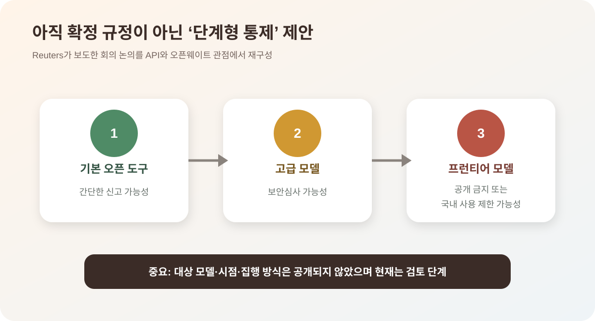

중국 AI 모델은 싸지만, 이제 접근 리스크까지 봐야 한다
중국 AI 모델은 가격 경쟁력과 빠른 성능 개선으로 전세계 기업의 선택지에 들어왔다. 하지만 동시에 미국과 중국 모두 AI 모델 접근을 더 엄격하게 보려는 움직임을 보이고 있다. 이제 기업이 AI 모델을 고를 때는 성능과 가격만 볼 수 없다. 데이터가 어디로 가는지, 어떤 국가와 기업이 관련돼 있는지, 장기적으로 계속 쓸 수 있는지도 함께 봐야 한다.
핵심 요약
중국 AI의 장점이 커질수록 통제 논리도 강해진다
Times of India는 Reuters를 인용해 중국 상무부가 Alibaba, ByteDance, Z.ai 등과 첨단 AI 모델의 해외 접근 제한 가능성을 논의했다고 보도했다. WSJ는 미국 기업들이 비용 절감을 위해 DeepSeek, Moonshot AI 같은 중국 모델을 검토하거나 사용하는 흐름을 다뤘다. FT는 중국 모델 사용 증가와 미국 AI 모델의 중국계 기업 접근 논란을 별도로 보도했다. AP는 Alibaba와 Baidu 등이 미 국방부의 중국 군사기업 명단에 오른 사실과 기업들의 반박을 전했다.

왜 중요한가
중국 모델은 AI 비용 압박을 낮추는 현실적인 대안이 되고 있다. 프런티어 모델을 대량으로 쓰는 기업은 추론 비용을 무시할 수 없고, 그래서 더 싸거나 직접 운영할 수 있는 모델을 찾는다. DeepSeek, Moonshot AI, Z.ai, Qwen 같은 중국 모델이 주목받는 이유도 여기에 있다.
하지만 모델이 싸고 좋을수록 정책 리스크도 커진다. 중국 입장에서는 고급 AI 모델이 해외로 너무 쉽게 퍼지는 것을 전략 기술 유출로 볼 수 있다. 미국 입장에서는 중국계 기업이 미국 AI 모델에 우회 접근하는 것을 안보 리스크로 볼 수 있다. 두 흐름이 동시에 나타나면서 AI 모델은 단순한 소프트웨어 상품이 아니라 지정학적 리스크가 붙은 인프라가 되고 있다.
현재 확인되는 것은 ‘회의’이지 시행령이 아니다
Reuters는 중국 당국이 지난 한 달 동안 주요 기술기업과 첨단 모델의 해외 접근 제한 가능성을 논의했다고 7월 7일 보도했다. 소식통은 아직 공개되지 않은 모델과 오픈형 모델도 논의 대상이었다고 전했다. 그러나 Reuters도 구체적인 제한 방식, 적용 시점과 대상 모델을 확인하지 못했다고 명시했다.
공식 최고인민법원 계열 저널에 실린 회의 요약에는 단계형 제안이 등장한다. 기본 오픈소스 도구는 간단한 신고, 더 고급 기술은 보안심사, 가장 민감한 프런티어 모델은 공개 금지 또는 국내 사용 제한을 검토하자는 내용이다. 이는 참석자의 정책 제안이지 현재 효력이 있는 전국 규정과 동일하지 않다.
따라서 ‘중국이 오픈소스 AI를 금지했다’거나 ‘해외 사용이 곧 막힌다’고 쓰면 과장이다. 현재 확정된 사실은 첨단 모델과 인재·기업의 해외 이동을 전략 기술 유출 관점에서 검토하는 논의가 진행됐다는 정도다. 실제 규정이 나오기 전까지 보류 후보로 다뤄야 한다.
API와 오픈웨이트는 통제 방식이 완전히 다르다
중국 기업이 서버에서 운영하는 API는 계정, 결제, IP 주소, 사용자 신원과 기능별 권한을 통해 해외 접근을 제한할 수 있다. 특정 국가의 신규 가입을 막거나 고급 기능만 비활성화하고, 사용량과 위험 요청을 감시하는 방식도 가능하다. 규정이 바뀌면 즉시 적용할 수 있다.
반면 모델 가중치가 이미 전 세계에 내려받아졌다면 회수하기 어렵다. 새 버전의 공개와 공식 저장소 배포, 기술지원은 막을 수 있어도 기존 사본의 실행을 완전히 통제할 수 없다. 그래서 규제가 도입된다면 미래의 최상위 모델은 API만 제공하거나, 지연 공개·저정밀 버전·기능 제한 가중치처럼 단계적으로 나눌 가능성이 있다.
공개 라이선스도 변수다. ‘오픈웨이트’는 가중치를 받을 수 있다는 뜻이지 사용·재배포·상업화가 모두 자유롭다는 뜻은 아니다. 수출통제와 국가안보법은 민간 라이선스보다 우선할 수 있고, 해외 미러와 파생 모델이 원본 제한을 얼마나 따라야 하는지는 집행이 어려운 영역이다.
중국이 개방 전략을 다시 계산하는 이유
중국 모델 기업은 낮은 가격과 공개 가중치로 해외 개발자를 빠르게 확보했다. 이는 Nvidia 칩 접근이 제한된 상황에서 소프트웨어 생태계와 영향력을 넓히는 효과적인 전략이었다. 미국 기업도 비용 절감과 멀티모델 운영을 위해 Qwen·DeepSeek·GLM·Kimi 계열을 시험했다.
성능이 프런티어에 가까워질수록 정부의 계산은 달라진다. 해외 경쟁사가 가중치를 이용해 지식과 성능을 이전받거나, 군사·사이버 용도로 활용하거나, 중국 기업과 인재를 인수해 핵심 역량이 빠져나갈 수 있다는 우려가 커진다. Manus 등 해외로 이동한 스타트업에 대한 조사 보도도 이 맥락과 연결된다.
동시에 지나친 제한은 중국의 장점을 훼손한다. 개발자는 접근 가능한 모델로 이동하고, 해외 기업은 중국 공급자를 장기 시스템에서 빼며, 중국 모델의 국제 표준 영향력이 줄 수 있다. 개방으로 생태계를 키우는 이익과 최상위 능력을 통제하는 안보 이익 사이의 균형이 쟁점이다.
미국과 중국의 통제가 닮아가는 지점
미국은 첨단 칩 수출과 고성능 모델 접근을 안보 문제로 다루고, 중국도 자국의 모델·인재·기업 이동을 전략 기술로 보기 시작했다. 서로 상대의 통제를 비판하면서 자국의 최상위 능력에는 문턱을 세우는 대칭 구조다. AI 공급망이 양쪽으로 갈라질 가능성이 커진다.
그러나 법과 집행 수단은 다르다. 미국은 제재 명단, 수출관리규정, 클라우드 고객 확인과 기업 협의를 활용하고, 중국은 데이터·사이버보안· 수출통제·국가안보법과 행정지도를 결합할 수 있다. 기업은 ‘중국 모델’이라는 한 범주보다 법인, 호스팅 위치, 가중치 출처와 고객 업종을 개별적으로 봐야 한다.
기업에는 어떤 문제가 되나
기업 입장에서 가장 큰 변화는 모델 선택이 구매 결정이 아니라 리스크 관리가 된다는 점이다. 고객 데이터가 들어가는 업무, 내부 코드가 들어가는 업무, 공개 문서 요약 업무를 모두 같은 모델로 처리하면 위험하다. 어떤 데이터는 외부 API로 보내도 되지만, 어떤 데이터는 사내망이나 특정 지역 안에서만 처리해야 할 수 있다.
중국 모델을 쓰지 말아야 한다는 뜻은 아니다. 비용이 낮고 성능이 충분하다면 분명한 장점이 있다. 다만 장기 계약, 고객사 보안 심사, 미국 거래처와의 관계, 데이터 이전 규정까지 함께 봐야 한다. 특히 글로벌 고객을 상대하는 기업은 모델 제공사의 국적과 데이터 처리 위치가 계약 조건에 직접 들어올 수 있다.
저렴한 토큰 가격에 포함되지 않은 비용
API 단가는 전체 비용의 일부다. 보안 심사, 데이터 마스킹, 해외 고객 설명, 모델 교체 테스트와 규정 변경 대응 인력이 필요하다. 오픈웨이트를 자체 운영하면 공급 중단 위험은 낮아지지만 GPU·운영·패치·안전 필터 비용을 기업이 부담한다. 총소유비용으로 비교해야 한다.
모델 성능도 평균 벤치마크보다 업무별로 평가해야 한다. 한국어·코딩·에이전트 작업에서 가격 대비 성능이 좋아도 환각, 검열, 도구 호출, 장문 안정성과 보안 취약점이 다를 수 있다. 같은 평가셋을 여러 모델에 반복 적용하고 버전 변경 때 회귀 테스트를 해야 한다.
기업이 만들 수 있는 교체 가능한 구조
애플리케이션이 한 모델의 전용 API와 응답 형식에 직접 묶이지 않도록 중간 라우팅 계층을 두는 것이 첫 단계다. 프롬프트, 검색 데이터, 도구 정의와 평가 로그를 별도로 관리하면 공급자가 바뀌어도 핵심 업무 흐름을 이전할 수 있다. 고위험 작업은 두 모델 교차 검증이나 사람 승인을 요구할 수 있다.
데이터 등급도 분리해야 한다. 공개 정보는 비용이 낮은 모델에, 내부 일반 문서는 계약상 보호가 확인된 엔터프라이즈 환경에, 영업비밀과 개인정보는 사내 또는 지정 지역 모델에 보내는 방식이다. 모델 국적만으로 허용·금지를 정하기보다 데이터와 업무 위험을 기준으로 삼는 편이 지속 가능하다.
계약에는 접근 중단 사전통보, 데이터와 로그 반환, 모델 버전 유지, 하위처리자와 저장 지역, 규제 변경 시 종료권을 넣어야 한다. 오픈웨이트는 원본 파일·라이선스·해시를 보관해 나중에 저장소가 닫혀도 재현할 수 있게 해야 한다.
한국 기업이 볼 지점
한국 기업은 미국 AI 모델과 중국 AI 모델 사이에서 실용성과 리스크를 동시에 따져야 한다. 개발 생산성만 보면 저렴한 중국 모델이 매력적일 수 있다. 하지만 금융, 제조, 공공, 국방, 대기업 협력사처럼 보안 요구가 높은 영역에서는 모델 사용 정책을 문서화해야 한다.
가장 현실적인 접근은 업무별로 모델 사용 등급을 나누는 것이다. 공개 자료 요약, 내부 문서 초안, 고객 데이터 분석, 소스코드 검토를 같은 등급으로 묶지 말아야 한다. 모델을 바꾸기 쉬운 구조를 만들어 두는 것도 중요하다. 특정 모델이 갑자기 막히거나 가격이 바뀌어도 업무가 멈추지 않아야 한다.
미국 고객과 중국 고객을 동시에 상대하는 국내 제조·금융·소프트웨어 기업은 프로젝트별 모델 목록과 데이터 흐름을 증명할 수 있어야 한다. 고객 계약이 특정 국가 모델 사용을 금지하는지, 중국 법인이 현지 모델을 사용한 결과가 본사 시스템으로 이동하는지까지 확인해야 한다. 공급망 실사는 AI 서비스에도 적용된다.
앞으로 볼 포인트
- 중국이 실제로 첨단 AI 모델의 해외 접근 제한 규칙을 발표하는지
- 미국 AI 기업들이 중국계 기업과 해외 자회사 접근을 어디까지 차단하는지
- 기업들이 비용 절감을 위해 중국 모델을 쓰되 어떤 보안 장치를 붙이는지
- 오픈웨이트 모델과 API 모델이 규제에서 다르게 취급되는지
내가 보는 핵심
중국의 접근 제한은 아직 정책 가능성이지 확정 규칙이 아니다. 그러나 논의 자체가 중요한 이유는 중국 모델의 경쟁력이 높아지면서 개방이 산업 전략에서 안보 딜레마로 바뀌고 있기 때문이다. 싸고 공개적이라는 장점이 영구 조건이라고 가정해서는 안 된다.
기업의 답은 중국 모델을 일괄 배제하거나 가격만 보고 채택하는 두 극단이 아니다. 데이터 등급, 모델 교체, 계약상 종료권과 독립 평가를 갖추면 여러 지역의 모델을 실용적으로 쓸 수 있다. AI 조달의 핵심 지표는 토큰 가격에서 공급 지속성과 통제권으로 넓어졌다.
출처
- Times of India / Reuters 인용: China weighs curbs on overseas access to advanced AI models
- WSJ: China weighs limits on the AI models American companies love
- Financial Times: Companies turn to Chinese AI models to cut costs
- Financial Times: OpenAI and Google sell AI models to blacklisted China groups
- AP: Pentagon adds Alibaba, BYD, Baidu to Chinese military company list
- Business Insider: GLM-5.2 hands-on test
- The Atlantic: China's answer to AI sticker shock
- Reuters: meetings on possible overseas model-access controls and tiered proposals
- AP: China calls for global AI cooperation while criticizing U.S. technology curbs